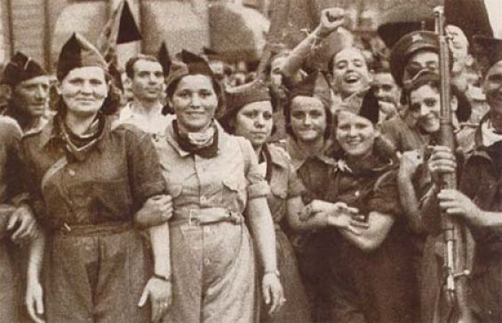
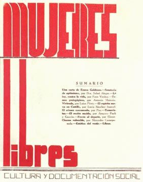

Les milices : une armée sans officiers

Dès juillet 1936, des dizaines de milliers de volontaires partent vers le front d'Aragon. Les milices confédérales refusent les grades, le salut et les privilèges : les délégations sont élues, la solde est la même pour toutes et tous, et la discipline repose sur l'engagement.
Au début de 1937, le gouvernement impose la militarisation : les milices deviennent des divisions de l'armée régulière, avec officiers et code militaire. Une partie des miliciens refuse et rentre à l'arrière ; la plupart acceptent, pour ne pas perdre armes et ravitaillement.
Mujeres Libres

Fondée en avril 1936 par Lucía Sánchez Saornil, Mercedes Comaposada et Amparo Poch y Gascón, Mujeres Libres (Femmes libres) refuse d'attendre « après la révolution » pour l'émancipation des femmes. Elle aurait compté autour de 20 000 membres.
- Cours d'alphabétisation et de formation professionnelle pour que les femmes remplacent les hommes partis au front.
- Crèches, maternités, éducation à la santé et à la sexualité.
- Lutte contre la prostitution par la formation et l'emploi, pas par la répression.
- Critique du machisme à l'intérieur même de la CNT, qui ne reconnaîtra jamais Mujeres Libres comme branche à part entière.
Des miliciennes combattent au front en 1936, avant d'être renvoyées à l'arrière à partir de 1937.
Le dilemme : entrer au gouvernement ?
En novembre 1936, alors que Madrid est menacée, quatre membres de la CNT deviennent ministres : Juan García Oliver (Justice), Federica Montseny (Santé, première femme ministre en Espagne), Juan Peiró (Industrie) et Juan López (Commerce).
- Pour : obtenir armes, crédits et ravitaillement, que l'URSS et le gouvernement refusaient aux colonnes anarchistes ; ne pas briser l'unité antifasciste.
- Contre : renoncer aux principes, légitimer l'État qui allait défaire les collectivités, et désarmer la révolution au profit de la guerre.
Le groupe des Amis de Durruti, créé en 1937, critique durement ce choix et réclame une « junte révolutionnaire ».
Mai 1937 : la révolution attaquée de l'intérieur
Le 3 mai 1937, la police du gouvernement catalan, poussée par les communistes, tente de prendre le central téléphonique de Barcelone, tenu par la CNT. Barricades pendant plusieurs jours. Les ministres anarchistes appellent au cessez-le-feu. Bilan : des centaines de morts, l'assassinat de l'anarchiste italien Camillo Berneri, la répression du POUM. En août, la dissolution du Conseil d'Aragon permet de démanteler de nombreuses collectivités.
La défaite et l'exil
Barcelone tombe en janvier 1939. Près d'un demi-million de personnes franchissent les Pyrénées : c'est la Retirada. Les personnes réfugiées sont parquées dans des camps sur les plages du Roussillon. Beaucoup d'anarchistes espagnols rejoindront ensuite la Résistance ; dans la 2e DB, la compagnie « La Nueve », composée en majorité de républicains espagnols, dont de nombreux libertaires, est parmi les premières à entrer dans Paris en août 1944.
Les leçons tirées par les libertaires
- Une révolution sociale peut fonctionner à grande échelle : produire, nourrir, soigner, éduquer sans patrons ni État.
- Sans abattre l'État, on lui laisse le temps de se reconstruire et de reprendre ce que la révolution a conquis.
- Gagner la guerre d'abord, faire la révolution ensuite ? Pour beaucoup, ce choix a fait perdre les deux.
- L'émancipation des femmes ne peut pas attendre.
Retour au début du dossier : la révolution espagnole.
Sources et pour aller plus loin
Lire
- Hommage à la Catalogne, George Orwell, 1938.Orwell était à Barcelone pendant les journées de mai 1937.
- Durruti n'est pas mort !Notre fiche : l'hommage d'Emma Goldman.
- Anarchistes électoralistesNotre fiche : Malatesta sur la tentation du pouvoir, dix ans avant.
Regarder
- Libertarias, Vicente Aranda, 1996.Une fiction sur une nonne qui rejoint les miliciennes de Mujeres Libres en route pour le front d'Aragon, dans la vidéothèque de Mamie.
Sur le web
- Mujeres LibresVingt mille femmes anarchistes organisées.
- La colonne DurrutiLa plus célèbre des milices.
- Les journées de mai 1937 à BarceloneQuand la révolution a été attaquée par son propre camp.
Dossier rédigé par la bande à Mamie à partir de travaux d'historiennes et d'historiens et de textes des mouvements concernés. Libre de reproduction.